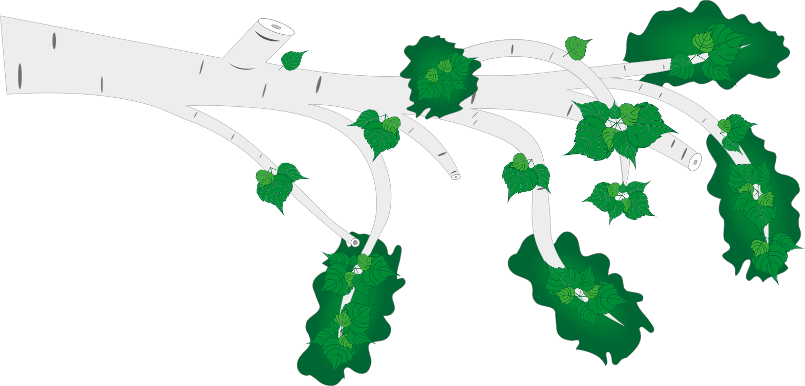
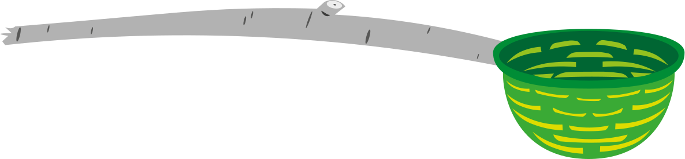
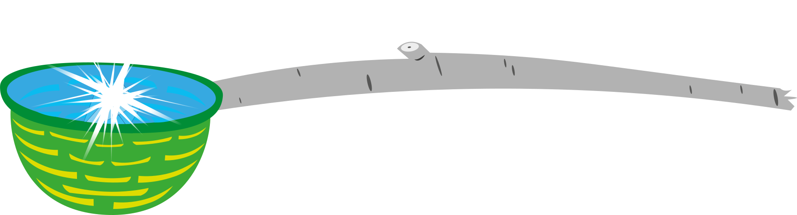

Eng
Eng
Catch the glare
- I want to catch the moon! – said the frog boldly and dreamily.
His two friends, the turtle and the crucian, first silently opened their eyes wide, looking at each other, and then curiously turned their eyes to the sky.
At that time, the spring sun was shining beautifully in the sky. Warm rays have already melted the ice on the lake and started to warm the earth. Which meant it was time for the plants to wake up and recreate the annual magic of life. All the animals were pleased, because the best time was ahead. It was near the steep bank that the friends sat and had their conversation.
- No. I don't want to catch him there, - the frog realized that his friends were looking in the wrong place, - I want to catch him here. In our lake. Yesterday I saw him splashing in the water and teasing me with a silver path.
Crucian laughed loudly, quickly realizing what his friend was talking about.
- Well, it is not a moon. It's just his reflection on the water, - the crucian explained with a bit of disappointment what exactly saw the frog.
- Then I want to catch the reflection, - stood the green-eyed frog, - It is so beautiful, it sparkled and I want to look at it up close.
The crucian stroked the frog's shoulder with his fin and said.
- This is impossible. Don't waste time. Better let's bask in the embrace of the sun. How many months we waited for this grace.
With these words, the crucian flashed its scales and swam to the center of the lake to enjoy the spring gift of warm.
This time the turtle spoke:
- I am not sure that your idea can be turned into reality. But I will gladly help you in your hunt for the silver moon, - she smiled and continued, - But I don't understand how to get it at all...
- Yes, this is another problem. I thought of tying a long rope and throwing it to the moon when it had thinned to a thin arc. But now... you can't catch the glare like that.
- Maybe it can be scooped up, - said the turtle thoughtfully.
- Yes! - the frog said so loudly that his friend shuddered in surprise, - You're right. It is necessary not to catch it from above, but from below.
The frog stood up and looked at the calm water:
- Let's make a ladle, only with a long handle. And at night we will quietly swim up and scoop up that moon.
The friends continued to sit by the shore and discuss their plan.
- Frog, what will you do with the moon? - suddenly asked the turtle.
- I don't know, - answered frog honestly, - I just want to look at it in my hands. Look at that silver glow. Such curiosity takes...
- You are strange. But the case is really interesting, - smiled the owner of the shell, - Oh, and where are you going to get the ladle?
The frog thought for a moment. He turned his head to survey the entire space around him, and then said decisively:
- There is nowhere to take it, it remains only to make it yourself, - then he carefully looked into the turtle's eyes and thoughtfully continued, - With your and crucian's help, we will be able to arrange something before nightfall.
And the animals, like skillful engineers, began to think through the design. A long reed could be used for a handle. However, it was not so strong, it could not withstand the load. The frog had to quickly abandon this idea.
The frog began to actively walk along the very edge of the lake. Water splashed playfully on the legs of the young inventor while he seemed to be talking to himself, only occasionally exchanging words with his friend. Sometimes he even gesticulated with his paws, conducting a fierce discussion, sorting through the options for materials, fasteners and drawing clear drawings of his new invention in his mind.
Then came the idea of breaking a long birch twig. Fortunately, there was a tree felled by beavers nearby, where you could get the required element. They decided on that. It remains to invent the ladle itself.
Friends started exchanging ideas and thoughts. However, as quickly as they arose, the options disappeared. What can you put water in so that it stays there? There was only silence in response to this question.
- That is all. I have exhausted my imagination, - sighed the turtle.
- I agree. And there is still no solution, - then the green-eyed wrinkled his forehead, came closer to his friend and sat down next to her, - I have only one option left to tie a weave from willow twigs, maybe add cattail feathers to retain water. However, it will not be enough for a long time.
A little upset, the frog continued:
- It can delay the moon for a few seconds. You know, this will be enough for me, - he smiled with satisfaction.
- Me too, - added the turtle.
They quickly headed for the crucian, which was swimming almost sleepily not far from its companions. They talked about their plan, about their invention, about their desire to look at that distant glow. And he did not hesitate to agree. Still, the idea interested him too.
The day was already beginning to pass by lunchtime. The other animals in the lake went about their business, not noticing the three almost dreamers, who began to actively implement their idea into life.
First, they went to a fallen tree, the top of which was completely in the water. They sailed around several times until they decided on the best option. They grasped the twig tightly and pulled with all their might. From the first time, it did not give up. But the animals did not give up. For the sake of such a goal, you can sweat. They tried as hard as they could, wrestled with the branch in all directions until it cracked.
And now the first element of the structure is already in hand. Friends rejoiced, it was as if fate itself was on their side. Emotions overflowed, they joked and smiled, already happy with the work done. But there was no time to relax. Time went on relentlessly, and it was still necessary to finish what had been started.
They quickly scuttled to the nearest willow tree. The animals did not even have to climb the tree. There were already many broken twigs lying on the shore, which were perfectly suitable for knitting. They first gathered them into a big pile, then selected the best ones and got to work.
The frog started tinkering.
He managed the work of his assistants, and himself performed the most difficult tasks. He made a strong ring from the thickest twig. Then he seemed to tie others to it, skillfully interweaving them. The work progressed, although not quickly, but unceasingly. The turtle and the crucian picked the right twigs and gave them to the frog.
The green-eyed skillfully worked with the material with his thin fingers. He worked so hard that he didn't notice the time. After all, the work was moving, so it was already possible to tie the finished structure to a birch branch. Everything looked solid and corresponded to the original idea.
The last stage remained - to add cattail feathers. Fortunately, there was plenty of it. Almost an island grew right next to it, which made it possible to quickly pick up the necessary material. The animals collected leaves and began to thread them between the willow branches. So a beautiful green basket was formed from almost a sieve.
The little engineers were very pleased. Everything turned out the way it was supposed to. And crafting together turned out to be interesting. They laughed and joked a lot without feeling tired. But such a case was still ahead.
And the matter was really waiting. The silver moon majestically rolled out in the middle of the sky, and the stars scattered nearby twinkled, singing melodiously. The quiet surface of the water, like a magic mirror, reflected a shiny disk, to which a small spray path led.
- I swim best underwater. I think I should swim first, - said the crucian.
His friends looked at each other, but there was nothing to say in response. And indeed the fish swam in the water faster and more skillfully than anyone else.
- Yes, - replied the turtle, and at that moment the frog nodded his head approvingly, - take our ladle and grab this reflection. As you scoop, hold firmly in your hands. And we will swim up after you to look at our prey even for a moment.
There was nothing to wait anymore and the friends got to work. Crucian grabbed the made bucket and deftly dived under the water. His friends followed him. It seemed that it would be possible to look at that silver glow. Look at its beauty and maybe even unravel the magic that beckons to you, riveting dreamy looks.
With decisive movements, the fish swam to the middle of the lake, holding the structure above itself. Boldly scooping up water, the crucian surfaced and quickly lowered its fins until the water had time to seep through the small cracks. Their diligent work paid off, and the water was really kept in the hemisphere of green interweaving for a long time. However, disappointment came so fast that the animals did not even notice the success of the constructed structure. After all, there was nothing in the water.
The frog looked into the bucket with great interest.
- I don't see anything, - he stated.
And the crucian couldn't even utter a single word.
The turtle was the last to swim up. At first she didn't even notice the sad fish eyes. She quickly looked into the water and didn't see anything either. Crucian silently handed the bucket to the frog and, barely holding back his tears, said:
- It's all in vain, - he turned sharply and swam in the direction of his house.
The turtle and the frog were left alone.
- I will not give up, - said the frog resolutely.
They looked around. The moon was still shining overhead and seemed to be mocking the little one below. And the reflection on the water treacherously moved further from the center of the lake. The frog grabbed the long handle of the ladle and swam towards him. The turtle faithfully followed him.
And the second attempt ended without results! There was nothing in the scooped water, not even a small piece of that dreamy moon. The third attempt is empty again!
- I don't have the strength anymore, - said the turtle, breathing heavily, - I'm terribly tired and I can't help you anymore, sorry.
She turned to swim quietly home and finally said:
- If you succees, I will be terribly happy for you. Look at the moon properly, - she smiled, waved her paw and swam to her home, leaving the frog alone.
In the morning, a sleepless crucian and a turtle woke up. They were disappointed by the lack of catch. But they wanted to know what happened to the frog. Maybe after all he managed to catch the glare and unravel the charms of the moon. Curiosity quickly took over and they almost simultaneously swam to the place where they had left the frog alone at night. But this time they found no one. They looked at each other in silence and decided to go to the frog's house.
They knocked on his door and the sleepy frog opened it within a few minutes.
- Frog, did you manage to catch the reflection? - immediately blurted out the crucian.
The frog showed both fatigue and a great desire to sleep. He said:
- Yes.
Friends were extremely impressed.
- How?! - the turtle and the crucian almost shouted at the same time.
- Friends, I really want to sleep. And it is better to show you than to explain. Let's go today, when the silver moon rises in the sky, I will show you everything.
They agreed.
This day was extremely long for the crucian and the turtle. They kept looking at the sky, but time seemed to stop on purpose. Even mundane matters did not distract from such news.
And then the late evening came. A crucian and a turtle were already swimming in the middle of the lake. The frog was the last to come with the bucket.
- Well, tell and show already, - said the turtle, - I want to see that beautiful glow so much.
The frog calmly smiled and began to speak:
- Last night I could not understand what I was doing wrong for a long time. I tried again and again to swim up and catch the reflection. But every time I failed. In the end, my efforts led me to the far end of our lake. That's where the big rocks are.
The turtle could not resist and interrupted the frog:
- So you got out on a rock? And already got the glare of the moon?
- And yes, and no, - laughed the frog, - Let's swim there and I'll show you everything.
All together they went to the distant rocks. It took a long time to swim there - the lake was huge. However, persistence seemed to push them on. And soon they were right next to them.
- Crucian, you will have to stay here. You can't go on big stones. But I promise, we will show you everything together with the turtle, - said the frog.
So they did. The crucian remained in the water, and the frog and turtle climbed onto a large rock.
- Look turtle, I almost lost hope of success yesterday, but when I got here I couldn't even believe my eyes at first. Look, there is a small moon lying among those boulders.
- And indeed! - she said in amazement.
The frog took the made ladle and deftly scooped up a small silver reflection among the large stones in the water. He brought it closer and showed it to the turtle. And she couldn't utter a single word out of surprise.
- Go to the crucian! We need to show him too, - said the frog.
The friends quickly plunged into the water and brought the bucket to their friend. Crucian instantly looked inside and gasped in surprise:
- How beautiful! But how? - asked the crucian.
Inside the green interweaving lay a small shiny stone, which in the bright moonbeams sparkled like magic. It reflected a beautiful silver glow that mesmerized everyone. And you could really see it up close.
- You know, friends, - said the frog, - It seems that I managed to catch a reflection. And that's enough for me.
The green-eyed frog was very pleased. He looked at the sparkling pebble, its silver iridescence and incredible beauty of radiance. The crucian and the turtle couldn't take their eyes off either.
Together they joked and smiled. They thanked the frog for his perseverance and courage. But soon the sun began to peek out and the friends decided to put the stone where they took it. After all, who knows, maybe someone else will want to catch the glare.
Kharkiv, 15.08.2024
